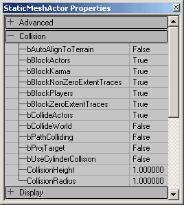
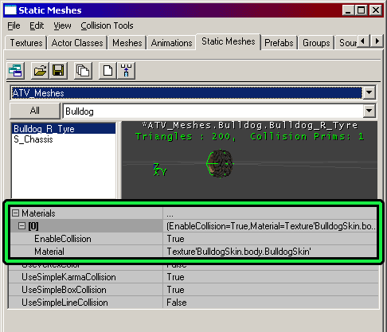

UDN
Search public documentation:
StaticMeshCollisionReferenceKR
English Translation
日本語訳
中国翻译
Interested in the Unreal Engine?
Visit the Unreal Technology site.
Looking for jobs and company info?
Check out the Epic games site.
Questions about support via UDN?
Contact the UDN Staff
日本語訳
中国翻译
Interested in the Unreal Engine?
Visit the Unreal Technology site.
Looking for jobs and company info?
Check out the Epic games site.
Questions about support via UDN?
Contact the UDN Staff
정적 메쉬 충돌 참조
문서 요약: 본 문서는 정적 메쉬 충돌에 대해 설명합니다. 문서 변경 내역: 2003 년 10 월 28 일 빌드 2226 을 기초로 Chris Linder (DemiurgeStudios?) 가 작성함.관련 문서
CollisionTutorialKR (충돌 튜토리얼)?, KarmaReferenceKR (Karma 참조)?, StaticMeshesTutorialKR (정적 메쉬 튜토리얼)?, ActorVariablesKR (액터 변수)?개요
충돌은 Unreal Engine 에서 상당히 까다로운 것입니다. 충돌은 많은 복잡성과 미묘한 차이점을 가지고 있고 이미 여러 문서들로 설명되고 있는 주제이기도 합니다. 본 문서는 Physics 를 PHYS_None 또는 "Mover 로 설정한 정적 메쉬에 주로 촛점을 맞춘 충돌의 범위로 한정하고 있습니다. "정적 메쉬"라는 용어는 DrawType 이 DT_StaticMesh 로 설정된 모든 객체를 의미합니다. 여기에는 마우스 오른쪽 버튼을 클릭하고Add Static Mesh: '....' 을 선택하여 세계에 배치하는 정적 메쉬뿐만 아니라 정적 메쉬로 그려진 Actor Browser로부터의 액터 도 포함합니다. 정적 메쉬의 물리는 또한 중요합니다. 그 이유는 정적 메쉬는 한 장소에 위치하고 다른 것이 와서 충돌할 때 또는 Movers 일 때 가장 충돌을 잘하기 때문입니다. 이동하는 (그러나 Movers 아닌) 정적 메쉬 또한 충돌합니다. 이 문서는 이러한 경우에도 유용할 수 있습니다. 자세한 내용은 이동하는 정적 메쉬 섹션을 참조하십시오.
이러한 좁은 범위 안에서도 많은 복합성을 내포하고 있습니다. 본 문서는 주어진 설정에서 정적 메쉬가 충돌하는 방법과 무엇과 충돌하는지에 대한 자세한 참조를 제공하려 합니다. 우선 첫 번째로 중요한 것은 충돌에는 설정해야 하는 많은 충돌 변수가 있다는 것과 그들은 모두 상호 관련이 있다는 것을 인식하는 것입니다. 무언가를 충돌하게 하기 위해서 검사해야 하는 단일 항목이라는 것은 없습니다. 다른 검사 전에 충돌에 대한 몇 가지 검사가 먼저 발생하므로 검사에는 우선권이라는 것이 있습니다. 특정 충돌 검사의 우선권으로 인해 본 문서는 정적 메쉬를 충돌하게 만드는 단계별 과정으로 정리되어 있습니다. 모든 단계에서 객체를 충돌하지 않도록 할 수 있습니다. 객체가 충돌하는 것을 확실하게 하기 위해 다른 모든 단계들이 반드시 계속해서 진행되야 합니다.
1 단계: 액터 충돌 속성
액터 충돌 속성(속성에서의 "Collision" 카테고리)이 충돌하지 않도록 설정되었으면 정적 메쉬 충돌을 변경하더라도(정적 메쉬 브라우저에서의 속성) 충돌은 발생하지 않습니다. 액터 충돌 속성은 액터가 충돌하려고 할 필요가 있는지 여부를 나타내고 정적 메쉬 충돌 속성은 충돌할 필요 여부와 충돌 방법을 나타냅니다. 예를 들어 메시가 KActor 를 차단하기를 원하지만 bBlockKarma 를 FALSE 로 설정하는 경우 충돌이 발생하지 않습니다. bBlockKarma 를 TRUE 로 설정하면(그리고 기타 모든 충돌 속성을 정적 메쉬에 대한 기본값으로 유지시키면) 충돌할 가능성이 있습니다. UseSimpleKarmaCollision, UseSimpleBoxCollision, UseSimpleLineCollision 을 FALSE 로 설정하고 EnableCollision 을 모든 재질에 대해 TRUE 로 설정하면 반드시 충돌이 발생합니다.충돌 변수

이 섹션에서는 정적 메쉬를 위한 액터 충돌 변수에 대해 설명합니다. 액터 충돌 변수를 까다롭게 만드는 것은 bWorldGeometry 가 TRUE 또는 FALSE 인지 여부에 따라 충돌 변수가 서로 다른 작용을 할 수 있다는 점입니다. 마우스 오른쪽 버튼을 클릭한 다음Add Static Mesh: '....' 을 선택하여 UnrealEd 의 레벨에 정적 메쉬를 배치하는 경우 유형의 정적 메쉬는 bWorldGeometry 가 TRUE 로 설정되어 있습니다. DT_StaticMesh 의 DrawType 을 갖는 액터의 다른 유형에는 bWorldGeometry 가 FALSE 로 설정되어있을 수 있습니다. bWorldGeometry 의 값은 변경할 수 없고 또는 심지어 UnrealEd 에서 볼 수 없습니다. UnrealScript 에서 표시되고 수정할 수 있습니다. 일반적으로 무언가를 이동하거나 변경하지 못하는 월드 형상이면 bWorldGeometry 가 TRUE 일 것입니다. 정적 메쉬로 그려진 액터가 움직이고 변경하는 경우 bWorldGeometry 는 아마도 FALSE 일 것입니다.
일부 액터는 UnrealEd 에서 지정한 값을 덮어쓰기하는 코드에서의 충돌 변수를 일부를 변경하므로 주의를 기울일 필요가 있습니다. 이것은 예를 들면 Triggers, Teleporters, WarfareStationaryWeapons 와 관련된 경우입니다.
"충돌" 대 "차단"에 관한 중요 사항
"충돌"(예를 들면 bCollideActors 의 경우)은 엔진이 2 개의 객체가 접하고 있는지 여부를 조사하는 경우입니다. "차단"(예를 들면 bBlockKarma 의 경우)은 다른 것이 또 다른 것을 중지시키는 경우입니다. 예를 들어, 트리거는 충돌하지만 차단하지 않습니다. 따라서 이것은 엔진이 트리거에 접하고 있지만 그래도 트리거를 통해서 걸을 수 있다는 것을 알아내는 방법입니다.bWorldGeometry TRUE 를 위한 변수에 대한 설명
아래는 bWorldGeometry 가 TRUE 로 설정된 액터에 적용되는 액터 충돌 변수에 대한 설명입니다. 이것은 마우스 오른쪽 버튼을 클릭한 상태에서 =Add Static Mesh: '....' =을 선택했을 때 생성되는 StaticMeshActor 클래스의 경우입니다. 기본값은 StaticMeshActor 의 충돌 변수로 제공됩니다.| 설정 | 설명 | 기본값 |
|---|---|---|
| bCollideActors | 이것은 가장 중요한 충돌 변수입니다. bCollideActors 가 FALSE 이면 정적 메쉬는 아무것과도 충돌하지 않습니다. 이것은 충돌 해시 (hash) 에 있지 않기 때문입니다. bCollideActors 가 TRUE 이면 정적 메쉬는 다음의 다른 설정에 따라 충돌하거나 차단할 수 있습니다. | True |
| bBlockZeroExtentTraces | bBlockZeroExtentTraces 는 이 정적 메쉬가 제로 범위 추적을 차단하려 하는 여부를 결정합니다. 예를 들어 대부분의 무기 발사는 제로 범위 추적을 사용합니다. 메쉬의 실제 차단 여부는 bUseCylinderCollision 가 TRUE 이면 실린더 충돌에 의해 결정되고, 또는 FALSE 인 경우 아래에서 설명된 정적 메쉬 충돌 속성 에 의해 결정됩니다. | True |
| bBlockNonZeroExtentTraces | bBlockNonZeroExtentTraces 는 이 정적 메쉬가 제로가 아닌 범위 추적을 차단하려 하는 여부를 결정합니다. 예를 들어 플레이어의 동작은 제로가 아닌 범위 추적을 사용합니다. 메쉬의 실제 차단 여부는 bUseCylinderCollision 가 TRUE 이면 실린더 충돌에 의해 결정되고, 또는 FALSE 인 경우 아래에서 설명된 정적 메쉬 충돌 속성 에 의해 결정됩니다. | True |
| bBlockKarma | 이것을 TRUE 로 설정하면 정적 메쉬가 karma 의 차단을 시도하도록 만듭니다. 메쉬가 실제로 차단하는 여부는 아래에서 설명된 정적 메쉬 충돌 속성 에 의해 결정됩니다. 참고: 이것은 bUseCylinderCollision 에 의해 영향을 받지 않습니다. | True |
| bUseCylinderCollision | 이것이 TRUE 이면 엔진은 karma 충돌을 제외한 모든 충돌에 실린더 충돌 (CollisionRadius 및 CollisionHeight 에 의해 정의됨)을 사용합니다. 정적 메쉬 충돌 속성의 설정은 Karma 충돌을 제외하고는 무시됩니다. | False |
| bPathColliding | bBlockActors 및 bCollideActors 가 TRUE 이고 bStatic 이 FALSE 인 경우 bPathColliding 을 FALSE 로 설정시키면, 이 액터는 경로 구축 중 충돌하지 않습니다. 이는 즉, AI 가 비록 통과할 수 없더라도 이 액터를 통과하여 이동할 수 있다고 생각하는 것을 의미합니다. bPathColliding 을 TRUE 로 설정하면 AI 가 액터를 통과하여 이동할 수 있는 경우 AI 가 액터를 통과하여 경로를 발견하는 것은 막지 않습니다. 이 설정은 AI 가 통과하여 이동하려할 때 경로를 벗어나서 이동하는 무버와 액터에 유용합니다. bStatic 은 StaticMeshActors 에 대해 TRUE 이기 때문에, 대부분의 경우 bPathColliding 은 정적 메쉬에 그리 중요하지는 않습니다. | False |
| bCollideWorld | bWorldGeometry = TRUE 인 정적 메쉬가 충돌하는 방법에 영향을 끼치지 않습니다. | False |
| bBlockActors | bWorldGeometry = TRUE 인 정적 메쉬가 충돌하는 방법에 영향을 끼치지 않습니다. | False |
| bBlockPlayers | bWorldGeometry = TRUE 인 정적 메쉬가 충돌하는 방법에 영향을 끼치지 않습니다. | False |
| bProjTarget | bWorldGeometry = TRUE 인 정적 메쉬가 충돌하는 방법에 영향을 끼치지 않습니다. | False |
bWorldGeometry FALSE 를 위한 변수에 대한 설명
아래는 bWorldGeometry 가 FALSE 로 설정된 액터에 적용되는 액터 충돌 변수에 대한 추가 설명입니다. 이 유형의 정적 메쉬는 것을 사물을 차단하지 않은 추가 기회를 갖는 것을 제외하고 위에서 설명된 정적 메쉬처럼 작동합니다. 먼저 위의 차트를 사용하여 의문의 정적 메쉬가 사물을 차단하려는 여부를 확인하십시오. 차단하지 않으면 설정을 변경하십시오. 위의 설명에 따르면 정적 메쉬는 차단할 것이므로 이제 아래와 같은 추가 검사를 시행하여 확실한 차단 여부를 확인할 수 있습니다.| 설정 | 설명 |
|---|---|
| bCollideWorld | PHYS_None 의 정적 메쉬 또는 Movers 의 경우 이것은 별로 중요하지 않습니다. 그러나 정적 메쉬가 이동하는 경우 이것을 TRUE 로 설정하는 것이 좋습니다. |
| bBlockActors | 다른 플레이어가 아닌 액터들을 차단하려 합니다. 작동하려면 bBlockNonZeroExtentTrace 를 반드시 TRUE 로 설정해야 합니다. 메쉬의 실제 차단 여부는 bUseCylinderCollision 가 TRUE 이면 실린더 충돌에 의해 결정되고, 또는 FALSE 인 경우 아래에서 설명된 정적 메쉬 충돌 속성 에 의해 결정됩니다. |
| bBlockPlayers | 다른 플레이어 액터들을 차단합니다. 작동하려면 bBlockNonZeroExtentTrace 를 반드시 TRUE 로 설정해야 합니다. 메쉬의 실제 차단 여부는 bUseCylinderCollision 가 TRUE 이면 실린더 충돌에 의해 결정되고, 또는 FALSE 인 경우 아래에서 설명된 정적 메쉬 충돌 속성 에 의해 결정됩니다. |
| bProjTarget | 로켓 및 직결 명중 탄환과 같은 발사체를 차단합니다. 작동하려면 bBlockZeroExtentTrace 를 반드시 TRUE 로 설정해야 합니다. 메쉬의 실제 차단 여부는 bUseCylinderCollision 가 TRUE 이면 실린더 충돌에 의해 결정되고, 또는 FALSE 인 경우 아래에서 설명된 정적 메쉬 충돌 속성 에 의해 결정됩니다. |
Step 2: ---+ 정적 메쉬 충돌 속성
이 섹션에서 다루는 정적 메쉬 충돌 속성은 1 단계 에서 설명된 액터 충돌 속성에 따라 객체가 충돌하도록 설정되지 않은 경우 사용되지 않습니다. 이 섹션에서는 Static Mesh Browser 창에 있는 몇 가지 속성을 다룹니다. 아래의 이미지와 같이 Static Mesh Browser 에서의 충돌 모델? 과 "UseSimple (단순 사용)" 속성간의 관계를 차트를 사용하여 설명합니다. 각 충돌 모델 유형에 대한 None, Type 1, Type 2 차트가 있습니다. 각 차트에서는 UseSimpleKarmaCollision, UseSimpleBoxCollision, UseSimpleLineCollision 의 모든 가능한 설정이 각각 Karma, Box, Line 열로 표현됩니다.
Karma Objects 열은 Karma 객체를 차단하는데 메쉬가 무엇을 사용하는지를 나타냅니다. Non-Zero Extent Traces (예: 폰 움직임) 열은 폰 움직임과 실린더 충돌과 같은 것에 사용되는 제로가 아닌 범위 추적을 차단하기 위해 메쉬가 무엇을 사용하는지 나타냅니다. Zero Extent Traces (예 무기 발사) 열은 무기 발사등과 같은 것에 의해 사용되는 제로 범위 추적을 차단하기 위해 메쉬가 무엇을 사용하는지 나타냅니다.
각 충돌 모델 유형에 대한 None, Type 1, Type 2 차트가 있습니다. 각 차트에서는 UseSimpleKarmaCollision, UseSimpleBoxCollision, UseSimpleLineCollision 의 모든 가능한 설정이 각각 Karma, Box, Line 열로 표현됩니다.
Karma Objects 열은 Karma 객체를 차단하는데 메쉬가 무엇을 사용하는지를 나타냅니다. Non-Zero Extent Traces (예: 폰 움직임) 열은 폰 움직임과 실린더 충돌과 같은 것에 사용되는 제로가 아닌 범위 추적을 차단하기 위해 메쉬가 무엇을 사용하는지 나타냅니다. Zero Extent Traces (예 무기 발사) 열은 무기 발사등과 같은 것에 의해 사용되는 제로 범위 추적을 차단하기 위해 메쉬가 무엇을 사용하는지 나타냅니다.
충돌 모델 부재
이 차트는 충돌 모델? 을 갖지 못하는 정적 메쉬가 충돌하는 방법에 대해 설명합니다.| 기본값 | Karma | Box | Line | Karma 객체 | Non-Zero Extent Traces (제로가 아닌 범위 추적) (예: 폰 움직임) | Zero Extent Traces (제로 범위 추적) (예: 무기 발사) |
|---|---|---|---|---|---|---|
| False | False | False | 재질 충돌 | 재질 충돌 | 재질 충돌 | |
| False | False | True | 재질 충돌 | 재질 충돌 | 재질 충돌 | |
| False | True | False | 재질 충돌 | 재질 충돌 | 재질 충돌 | |
| False | True | True | 재질 충돌 | 재질 충돌 | 재질 충돌 | |
| True | False | False | 충돌이 발생하지 않음 | 재질 충돌 | 재질 충돌 | |
| True | False | True | 충돌이 발생하지 않음 | 재질 충돌 | 재질 충돌 | |
| * | True | True | False | 충돌이 발생하지 않음 | 재질 충돌 | 재질 충돌 |
| True | True | True | 충돌이 발생하지 않음 | 재질 충돌 | 재질 충돌 |
타입 1
이 차트는 타입 1 충돌 모델? 인 정적 메쉬가 충돌하는 방법에 대해 설명합니다. 타입 1 충돌 모델은 Save Brush As Collision (브러시를 충돌로 저장)? 또는 K-DOP?을 사용하여 만들어집니다. 이러한 충돌 유형은 또한 MCDCX 태그를 사용하여 모델링 프로그램에서 제작된? 충돌 도형을 포함합니다.| 기본값 | Karma | Box | Line | Karma 객체 | Non-Zero Extent Traces(제로가 아닌 범위 추적) (예: 폰 움직임) | Zero Extent Traces (제로 범위 추적) (예: 무기 발사) |
|---|---|---|---|---|---|---|
| False | False | False | 재질 충돌 | 재질 충돌 | 재질 충돌 | |
| False | False | True | 재질 충돌 | 재질 충돌 | 충돌 모델을 사용하여 충돌 | |
| False | True | False | 재질 충돌 | 충돌 모델을 사용하여 충돌 | 재질 충돌 | |
| False | True | True | 재질 충돌 | 충돌 모델을 사용하여 충돌 | 충돌 모델을 사용하여 충돌 | |
| True | False | False | 충돌 모델을 사용하여 충돌 | 재질 충돌 | 재질 충돌 | |
| True | False | True | 충돌 모델을 사용하여 충돌 | 재질 충돌 | 충돌 모델을 사용하여 충돌 | |
| * | True | True | False | 충돌 모델을 사용하여 충돌 | 충돌 모델을 사용하여 충돌 | 재질 충돌 |
| True | True | True | 충돌 모델을 사용하여 충돌 | 충돌 모델을 사용하여 충돌 | 충돌 모델을 사용하여 충돌 |
타입 2
이 차트는 타입 2 충돌 모델? 인 정적 메쉬가 충돌하는 방법에 대해 설명합니다. 타입 2 충돌 모델은 MCDBX, MCDSP, 또는 MCDCY 태그를 사용하여 모델링 프로그램에서 제작한? Fit Karma Primitive? 또는 충돌 도형을 사용하여 만들어진 충돌 모델입니다.| 기본값 | Karma | Box | Line | Karma 객체 | Non-Zero Extent Traces (제로가 아닌 범위 추적) (예: 폰 움직임) | Zero Extent Traces (제로 범위 추적) (예: 무기 발사) |
|---|---|---|---|---|---|---|
| False | False | False | 재질 충돌 | 재질 충돌 | 재질 충돌 | |
| False | False | True | 재질 충돌 | 재질 충돌 | 재질 충돌 | |
| False | True | False | 재질 충돌 | 재질 충돌 | 재질 충돌 | |
| False | True | True | 재질 충돌 | 재질 충돌 | 재질 충돌 | |
| True | False | False | 충돌 모델을 사용하여 충돌 | 재질 충돌 | 재질 충돌 | |
| True | False | True | 충돌 모델을 사용하여 충돌 | 재질 충돌 | 재질 충돌 | |
| * | True | True | False | 충돌 모델을 사용하여 충돌 | 재질 충돌 | 재질 충돌 |
| True | True | True | 충돌 모델을 사용하여 충돌 | 재질 충돌 | 재질 충돌 |
3 단계: 재질 충돌
재질 충돌은 충돌 모델이 사용되지 않은 경우에만 사용됩니다. 재질 충돌이 주어진 정적 메쉬에 적절한지 여부를 결정하기 위해 위의 2 단계 의 차트를 참조해 주십시오. 충돌은 Static Mesh Browser 에서 재질 단위로 설정 가능합니다. 재질의 일부를 메쉬 충돌에서 만드는 것은 매우 때때로 매우 유용할 수 있습니다. 재질 충돌을 설정하는 것은 Materials 배열을 확장한 아래의 이미지에서와 같이 각 재질에 대해 EnableCollision 을 설정하여 실행됩니다.
재질에 대해 EnableCollision 이 True 일 때 해당 재질로 텍스처된 재질의 모든 삼각형은 충돌 계산을 위해 사용됩니다. 이것은 즉 충돌 계산은 보고 있는 삼각형에 정확히 기반되어 있다는 것을 의미합니다. 이는 때때로 동일한 속도이지만 대부분의 경우 충돌을 계산하기 위한 삼각형이 더 많기 때문에 단순화된 충돌 모델 을 사용하는 것보다 속도가 느려집니다.